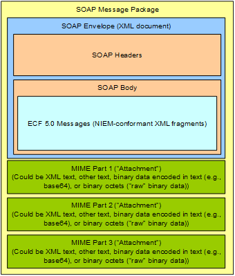

Electronic Court Filing Web Services Service Interaction
Profile Version 5.0
Committee Specification 01
24 April 2019
This version:
https://docs.oasis-open.org/legalxml-courtfiling/ecf-webservices/v5.0/cs01/ecf-webservices-v5.0-cs01.docx
(Authoritative)
https://docs.oasis-open.org/legalxml-courtfiling/ecf-webservices/v5.0/cs01/ecf-webservices-v5.0-cs01.html
https://docs.oasis-open.org/legalxml-courtfiling/ecf-webservices/v5.0/cs01/ecf-webservices-v5.0-cs01.pdf
Previous version:
N/A
Latest version:
https://docs.oasis-open.org/legalxml-courtfiling/ecf-webservices/v5.0/ecf-webservices-v5.0.docx (Authoritative)
https://docs.oasis-open.org/legalxml-courtfiling/ecf-webservices/v5.0/ecf-webservices-v5.0.html
https://docs.oasis-open.org/legalxml-courtfiling/ecf-webservices/v5.0/ecf-webservices-v5.0.pdf
Technical Committee:
OASIS
LegalXML Electronic Court Filing TC
Chair:
James Cabral (jcabral@mtgmc.com),
MTG Management Consultants
Editors:
James Cabral (jcabral@mtgmc.com),
MTG Management Consultants
Gary Graham (GGraham@courts.az.gov), Arizona Supreme
Court
Philip Baughman (Philip.Baughman@tylertech.com),
Tyler Technologies, Inc.
Additional artifacts:
This prose specification is one component of
a Work Product that also includes:
·
WSDL schemas: https://docs.oasis-open.org/legalxml-courtfiling/ecf-webservices/v5.0/cs01/schema/
·
XML WSDL Examples: https://docs.oasis-open.org/legalxml-courtfiling/ecf-webservices/v5.0/cs01/examples/
Related work:
This specification replaces or supersedes:
·
OASIS LegalXML Electronic Court Filing 4.0 Web Services Service
Interaction Profile 2.0. Edited by Adam Angione and Roger Winters. 21 September
2008. http://docs.oasis-open.org/legalxml-courtfiling/specs/ecf/v4.0/ecf-v4.0-webservices-spec/ecf-v4.0-webservices-v2.0-spec.html.
·
OASIS LegalXML Electronic Court Filing 4.0 Web Services Service
Interaction Profile 2.01. Edited by Adam Angione. 09 August 2011. http://docs.oasis-open.org/legalxml-courtfiling/specs/ecf/v4.0/ecf-v4.0-webservices-spec/ecf-v4.0-webservices-v2.01-spec.html.
This specification is related to:
·
Electronic Court Filing Version 5.0. Edited by James
Cabral, Gary Graham, and Philip Baughman. Latest version: http://docs.oasis-open.org/legalxml-courtfiling/ecf/v5.0/ecf-v5.0.html.
Declared XML namespaces:
·
https://docs.oasis-open.org/legalxml-courtfiling/ns/v5.0/MessageWrappers
·
https://docs.oasis-open.org/legalxml-courtfiling/ns/v5.0/WebServices
Abstract:
This document defines a Service Interaction Profile, as
defined in section 6 of the LegalXML Electronic Court Filing Version 5.0
(ECF 5.0) specification. The Web Services Service Interaction Profile may be
used to transmit ECF 5.0 messages between Internet-connected systems.
Status:
This document was last revised or approved by the OASIS
LegalXML Electronic Court Filing TC on the above date. The level of approval is
also listed above. Check the “Latest version” location noted above for possible
later revisions of this document. Any other numbered Versions and other
technical work produced by the Technical Committee (TC) are listed at https://www.oasis-open.org/committees/tc_home.php?wg_abbrev=legalxml-courtfiling#technical.
TC members should send comments on this specification to the
TC’s email list. Others should send comments to the TC’s public comment list,
after subscribing to it by following the instructions at the “Send
A Comment” button on the TC’s web page at https://www.oasis-open.org/committees/legalxml-courtfiling/.
This specification is provided under the RF
on Limited Terms Mode of the OASIS IPR Policy,
the mode chosen when the Technical Committee was established. For information
on whether any patents have been disclosed that may be essential to
implementing this specification, and any offers of patent licensing terms,
please refer to the Intellectual Property Rights section of the TC’s web page (https://www.oasis-open.org/committees/legalxml-courtfiling/ipr.php).
Note that any machine-readable content (Computer
Language Definitions) declared Normative for this Work Product is provided
in separate plain text files. In the event of a discrepancy between any such
plain text file and display content in the Work Product’s prose narrative
document(s), the content in the separate plain text file prevails.
Citation format:
When referencing this specification the following citation
format should be used:
[ECF-WS-SIP-v5.0]
Electronic Court Filing Web Services Service Interaction
Profile Version 5.0. Edited by James Cabral, Gary Graham, and Philip
Baughman. 24 April 2019. OASIS Committee Specification 01. https://docs.oasis-open.org/legalxml-courtfiling/ecf-webservices/v5.0/cs01/ecf-webservices-v5.0-cs01.html.
Latest version: https://docs.oasis-open.org/legalxml-courtfiling/ecf-webservices/v5.0/ecf-webservices-v5.0.html.
Copyright © OASIS Open 2019. All Rights Reserved.
All capitalized terms in the following text have the
meanings assigned to them in the OASIS Intellectual Property Rights Policy (the
"OASIS IPR Policy"). The full Policy may be
found at the OASIS website.
This document and translations of it may be copied and
furnished to others, and derivative works that comment on or otherwise explain
it or assist in its implementation may be prepared, copied, published, and
distributed, in whole or in part, without restriction of any kind, provided
that the above copyright notice and this section are included on all such
copies and derivative works. However, this document itself may not be modified
in any way, including by removing the copyright notice or references to OASIS,
except as needed for the purpose of developing any document or deliverable
produced by an OASIS Technical Committee (in which case the rules applicable to
copyrights, as set forth in the OASIS IPR Policy, must be followed) or as required
to translate it into languages other than English.
The limited permissions granted above are perpetual and will
not be revoked by OASIS or its successors or assigns.
This document and the information contained herein is
provided on an "AS IS" basis and OASIS DISCLAIMS ALL WARRANTIES,
EXPRESS OR IMPLIED, INCLUDING BUT NOT LIMITED TO ANY WARRANTY THAT THE USE OF
THE INFORMATION HEREIN WILL NOT INFRINGE ANY OWNERSHIP RIGHTS OR ANY IMPLIED
WARRANTIES OF MERCHANTABILITY OR FITNESS FOR A PARTICULAR PURPOSE.
OASIS requests that any OASIS Party or any other party that
believes it has patent claims that would necessarily be infringed by
implementations of this OASIS Committee Specification or OASIS Standard, to
notify OASIS TC Administrator and provide an indication of its willingness to
grant patent licenses to such patent claims in a manner consistent with the IPR
Mode of the OASIS Technical Committee that produced this specification.
OASIS invites any party to contact the OASIS TC
Administrator if it is aware of a claim of ownership of any patent claims that
would necessarily be infringed by implementations of this specification by a
patent holder that is not willing to provide a license to such patent claims in
a manner consistent with the IPR Mode of the OASIS Technical Committee that
produced this specification. OASIS may include such claims on its website, but
disclaims any obligation to do so.
OASIS takes no position regarding the validity or scope of
any intellectual property or other rights that might be claimed to pertain to
the implementation or use of the technology described in this document or the
extent to which any license under such rights might or might not be available;
neither does it represent that it has made any effort to identify any such rights.
Information on OASIS' procedures with respect to rights in any document or
deliverable produced by an OASIS Technical Committee can be found on the OASIS
website. Copies of claims of rights made available for publication and any
assurances of licenses to be made available, or the result of an attempt made
to obtain a general license or permission for the use of such proprietary
rights by implementers or users of this OASIS Committee Specification or OASIS
Standard, can be obtained from the OASIS TC Administrator. OASIS makes no
representation that any information or list of intellectual property rights
will at any time be complete, or that any claims in such list are, in fact,
Essential Claims.
The name "OASIS" is a trademark of OASIS, the owner and developer of this
specification, and should be used only to refer to the organization and its
official outputs. OASIS welcomes reference to, and implementation and use of,
specifications, while reserving the right to enforce its marks against
misleading uses. Please see https://www.oasis-open.org/policies-guidelines/trademark
for above guidance.
1 Introduction. 5
1.1 Relationship to ECF 5.0
Specification. 5
1.2 Relationship to other XML
Specifications. 5
1.2.1 W3C XML Schema 1.0. 5
1.2.2 W3C Namespaces in XML. 6
1.2.3 W3C Simple Object Access Protocol
(SOAP) 1.1. 6
1.2.4 W3C Web Services Description
Language (WSDL) 1.1. 6
1.2.5 W3C XML-Signature Syntax and
Processing. 6
1.2.6 WS-I Basic Profile 1.1. 7
1.2.7 W3C SOAP 1.1 Binding for MTOM 1.0. 7
1.2.8 WS-I Basic Security Profile 1.1. 7
1.2.9 WS-ReliableMessaging Version 1.1. 7
1.3 IPR Policy. 7
1.4 Terminology. 7
1.4.1 Symbols and Abbreviations. 9
1.5 Normative References. 9
1.6 Non-Normative References. 11
2 Profile
Design. 12
2.1 Service Interaction Profile
Identifier 12
2.2 Transport Protocol 12
2.3 MDE Addressing. 13
2.4 Operation Addressing. 13
2.5 Request and Operation Invocation. 13
2.6 Synchronous Mode Response. 13
2.7 Asynchronous Mode Response. 13
2.8 Message/Attachment Delimiters. 13
2.9 Message Identifiers. 13
2.10 Message Non-repudiation. 14
2.11 Message Integrity. 14
2.12 Message Confidentiality. 14
2.13 Message Authentication. 14
2.14 Message Reliability. 14
2.15 Message Splitting and Assembly. 14
2.16 Transmission Auditing. 15
3 Service
Definitions. 16
4 Conformance. 17
Appendix A. Acknowledgments. 18
Appendix B. (Informative) Example
Implementation. 19
Appendix C. (Informative) Example
Transmissions. 20
C.1 Operation Invocation. 20
C.2 Synchronous Response. 20
C.3 Asynchronous Response. 21
Appendix D. Revision History. 22
This document defines a Service Interaction Profile, as
called for in section 7 of [ECF
5.0]. The purpose of the Web Services Service Interaction Profile
is to provide a web service-based system in conformance with the WS-I Basic
Profile 1.1 ([WS-I BP 1.1])
and Basic Security Profile 1.1 ([WS-I
BSP 1.1]) for use with the [ECF 5.0] specification. This version adds
support for bulk filings. improves security support for tokens, attachments,
and rights management through inclusion of WS-Security 1.1 and adds supports
for message splitting and assembly through inclusion of WS-Reliable Messaging
1.1 ([WSRM 1.1]). This specification
requires an active network connection between the sending and receiving MDEs.
The ECF 5.0 specification describes the technical
architecture and the functional features of an electronic court filing system,
that is, features needed to accomplish electronic filing in a court, pointing
out both normative (required) and non-normative (optional) business processes
it supports. The non-functional requirements associated with electronic filing
transactions, and actions and services needed to accomplish the transactions,
such as network structures and security infrastructures, are defined in related
specifications, namely:
·
Service interaction profile specifications defining
communications infrastructures within which electronic filing transactions can
take place.
·
Document signature profile specifications that define mechanisms
for stating or proving that a person signed a particular document.
This specification represents an ECF 5.0 service interaction
profile based on web-services. It is intended for implementation in
conjunction with the ECF 5.0 specification and at least one ECF 5.0 document
signature profile specification. Specifically, in this service interaction
profile, the implementation details for each of the Major Design Elements
(MDEs), operations, and messages defined in the ECF 5.0 specification, are
defined in Web Services Description Language (WSDL).
Consistent with the ECF 5.0 principle of leveraging other
existing, non-proprietary XML specifications wherever possible, this service
interaction profile specification leverages previous specifications for web
services messaging and security including the following:
·
W3C XML Schema 1.0 ([XMLSCHEMA11-1, XMLSCHEMA11-2]).
·
W3C Namespaces in XML ([XML-NAMES]).
·
W3C Simple Object Access Protocol (SOAP) 1.1 ([SOAP 1.1]).
·
W3C Web WSDL 1.1 ([WSDL
1.1]).
·
W3C XML-Signature
Syntax and Processing
([XMLDSIG-CORE1]).
·
W3C
SOAP 1.1 Binding for MTOM 1.0 ([SOAP MTOM 1.0]).
·
WS-I Basic Profile Version 1.1 ([WS-I BP 1.1]).
·
WS-I Basic Security Profile Version 1.1 ([WS-I BSP 1.1]).
·
OASIS WS-Reliable Messaging 1.1 ([WSRM 1.1]).
The use of each
of these specifications is described below.
The W3C XML Schema 1.0 ([XMLSCHEMA11-1, XMLSCHEMA11-2]) specification defines
an application protocol for imposing constraints on the storage layout and
logical structure of data objects using text tags or “markup.” Compliance with
the requirements of the XML Schema 1.0 specification is REQUIRED for compliance
with this service interaction profile.
The W3C Namespaces in XML ([XML-NAMES]) specification
defines conventions for defining and referring to separate XML tags. Compliance
with the requirements of the Namespaces in XML specification is REQUIRED for
compliance with this service interaction profile.
The W3C SOAP 1.1 ([SOAP 1.1]) specification
defines message exchange patterns and message structures for use with XML.
Compliance with the requirements of the [SOAP 1.1] specification is REQUIRED for
compliance with this service interaction profile.
The W3C WSDL ([WSDL
1.1]) specification enables the description
of services as sets of endpoints operating on messages. Compliance with the
requirements of the [WSDL 1.1]
specification is REQUIRED for compliance with this service interaction profile.
An MDE implementation MUST consist of a [SOAP 1.1] web
service that implements the SOAP HTTP binding for that MDE’s portType from the
corresponding WSDL definition file as follows:
Further, each MDE implementation MUST be accompanied by an
implementation-specific WSDL document that imports the namespace defined in one
of the above files and defines a <wsdl:service>
element containing a <soap:address>
element with a location
attribute whose value provides an HTTP URL at which the MDE implementation can
be invoked.
(Note that in the previous paragraph, a namespace prefix of
“wsdl” is assumed to map to the http://schemas.xmlsoap.org/wsdl/
namespace, while the namespace prefix of “soap” is assumed to map to the http://schemas.xmlsoap.org/wsdl/soap/
namespace.)
Example (non-normative) implementation-specific WSDL
documents for each MDE are provided with this specification and listed in the
table above.
1.2.5 W3C
XML-Signature
Syntax and Processing
The W3C XML Signature Syntax and Processing ([XMLDSIG-CORE1]) specification defines representations of signatures of
Web resources, portions of protocol messages (anything that may be referenced
by a URI), and procedures for computing and verifying such signatures.
Compliance with the requirements of the XML Signature Syntax and Processing
specification is REQUIRED for compliance with this service interaction profile.
The WS-Interoperability Basic Profile 1.1 ([WS-I BP 1.1]) specification defines a set of
best practices for implementing interoperable web services. Compliance with
the requirements of the [WS-I BP
1.1], with the exceptions noted in Section 1.2.7, is REQUIRED for
compliance with this service interaction profile.
The SOAP 1.1 Binding for MTOM 1.0 ([SOAP MTOM 1.0]) defines a set of best practices
for implementing interoperable serialization of the SOAP envelope and its
representation in the message. This binding MUST be used as a replacement for
the WS-I Attachments Profile 1.0 and the W3C Simple SOAP Binding Profile in the
WS-I Basic Profile [WS-I BP 1.1].
Compliance with the requirements of the [SOAP MTOM 1.0] and the specifications that this
binding references, the SOAP Message Transmission Optimization Mechanism (MTOM)
([SOAP12-MTOM]) and the
W3C XML-binary Optimized Packaging (XOP) specifications ([XOP10]), is REQUIRED for compliance with the
web services service interaction profile.
The WS-Interoperability Basic Security Profile Version 1.0 ([WS-I BSP 1.1])
complements [WS-I BP 1.1]
and defines a set of best practices for implementing interoperable and secure
web services. With the exception of the requirements for use of the WS-I
Attachments Profile 1.0 and the W3C Simple SOAP Binding Profile 1.0, compliance
with the requirements of [WS-I
BSP 1.1] is REQUIRED for compliance with this service interaction profile.
However, in many cases, [WS-I BSP
1.1] is underspecified. The following options in [WS-I BSP 1.1] are
REQUIRED for compliance with this web services service interaction profile:
·
E0002 - Security Tokens - Security tokens MUST be specified in
additional security token profiles. (NOTE: This will be determined in Court
Policy)
·
R3103 - A SIGNATURE MUST be a Detached Signature as defined by
the XML Signature specification.
The WS-Reliability 1.1 ([WS-RM 1.1]) specification complements [WS-I BP 1.1] and defines
a set of extensions for exchanging SOAP messages with guaranteed delivery, no
duplicates, and guaranteed message ordering.
This specification is provided under the RF
on Limited Terms Mode of the OASIS IPR Policy,
the mode chosen when the Technical Committee was established. For information
on whether any patents have been disclosed that may be essential to
implementing this specification, and any offers of patent licensing terms,
please refer to the Intellectual Property Rights section of the TC’s web page (https://www.oasis-open.org/committees/legalxml-courtfiling/ipr.php).
The key words “MUST”, “MUST NOT”, “REQUIRED”, “SHALL”, “SHALL
NOT”, “SHOULD”, “SHOULD NOT”, “RECOMMENDED”, “MAY”, and “OPTIONAL” in this
document are to be interpreted as described in [RFC2119] and [RFC8174] when, and only when, they appear in all capitals,
as shown here.
The key terms used in this specification include:
Attachment
Information transmitted between MDEs that is of an
arbitrary format, and is related to the message(s) in the transmission in a
manner defined in the ECF 5.0 specification. An attachment may be in XML
format, non-XML text format, encoded binary format, or un-encoded binary
format.
Callback message
A message transmission returned by some operations some
time after the operation was invoked (asynchronously).
Document
An electronic equivalent of a document that would otherwise
be filed on paper in a traditional, non-electronic fashion.
Docketing
The process invoked when a court receives a pleading, order
or notice, with no errors in transmission or in presentation of required
content, and records it as a part of the official record.
Filer
An attorney, judicial official or a pro se
(self-represented) litigant who electronically provides filings (combinations
of data and documents) for acceptance and filing by a court, or who has
successfully filed filings with a court.
Filing
An electronic submission (with any associated data, one or
many lead and connected documents, and the like) that has been assembled for
the purpose of being filed, either into a specified court case, or to initiate
a new court case.
Major Design Element (MDE)
A logical grouping of operations representing a significant
business process supported by ECF 5.0. Each MDE operation receives one or more
messages, returning a synchronous response message (a reaction to a message
received) and returning an OPTIONAL asynchronous (later) response message to
the originating message sender. An MDE in ECF is comparable to a UML
“Component”, “Port” or “Class” with the “implementationClass” stereotype.
Message
Information transmitted between MDEs that consists of a
well-formed XML document that is valid against one of the defined message
structure schemas in the ECF 5.0 specification. A message may be related to
one or more attachments in a manner defined in the ECF 5.0 specification. A
Message in ECF is comparable to a UML “Parameter” or “Class” with the “Type”
stereotype.
Message Transmission
The sending of one or more messages and associated
attachments to an MDE. Each transmission must invoke or respond to an
operation on the receiving MDE, as defined in the ECF 5.0 specification.
Operation (or MDE Operation)
A function provided by an MDE upon receipt of one or more
messages. The function provided by the operation represents a significant step
in the court filing business process. A sender invokes an operation on an MDE
by transmitting a request with an operation identifier and a set of messages.
An Operation in ECF is comparable to a UML “Operation”.
Operation signature
A definition of the input message(s) and synchronous
response message associated with an operation. Each message is given a name
and a type by the operation. The type is defined by a single one of the
message structures defined in the ECF 5.0 specification.
Receiving MDE
In an Electronic Court Filing operation, the MDE that
receives the request with the operation invocation performs the operation and
sends the response.
Sending MDE
In an Electronic Court Filing operation, the MDE that sends
the request including the operation invocation and receives the response with
the results of the operation.
Synchronous response
A message transmission returned immediately (synchronously)
as the result of an operation. Every operation has a synchronous response.
The key symbols and abbreviations used in this specification
include:
ECF 5.0
OASIS LegalXML Electronic Court Filing 4.0
MDE
Major Design Element
OASIS
Organization for the Advancement of Structured Information
Standards
SOAP
Simple Object Access Protocol
XML
eXtensible Markup Language
W3C
World Wide Web Consortium
WSDL
Web Services Description Language
WS-I
Web Services Interoperability Organization
[ECF 5.0] Electronic
Court Filing Version 5.0. Edited by James Cabral, Gary Graham, and Philip Baughman.
Latest version: http://docs.oasis-open.org/legalxml-courtfiling/ecf/v5.0/ecf-v5.0.html.
[SOAP12-MTOM] SOAP
Message Transmission Optimization Mechanism, M. Gudgin, N. Mendelsohn, M.
Nottingham, H. Ruellan, Editors, W3C Recommendation, January 25, 2005,
http://www.w3.org/TR/2005/REC-soap12-mtom-20050125/. Latest version available at http://www.w3.org/TR/soap12-mtom/.
[XML-NAMES] Namespaces in XML 1.0
(Third Edition), T. Bray, D. Hollander, A. Layman, R. Tobin, H. Thompson,
Editors, W3C Recommendation, December 8, 2009,
http://www.w3.org/TR/2009/REC-xml-names-20091208/. Latest version available at http://www.w3.org/TR/xml-names/.
[RFC2045] Freed, N.
and N. Borenstein, "Multipurpose Internet Mail Extensions (MIME) Part One:
Format of Internet Message Bodies", RFC 2045, DOI 10.17487/RFC2045,
November 1996, <https://www.rfc-editor.org/info/rfc2045>.
[RFC2046] N. Freed, Multipurpose
Internet Mail Extensions (MIME) Part Two: Media Types, http://www.ietf.org/rfc/rfc2046, IETF RFC
2046, November 1996.
[RFC2119] Bradner,
S., "Key words for use in RFCs to Indicate Requirement Levels", BCP
14, RFC 2119, DOI 10.17487/RFC2119, March 1997, <http://www.rfc-editor.org/info/rfc2119>.
[RFC2616] R.
Fielding, et al., Hypertext Transfer Protocol -- HTTP/1.1, http://www.ietf.org/rfc/rfc2616, IETF RFC 2616, June 1999.
[RFC2617] J. Franks, P. Hallam-Baker, J. Hostetler, S. Lawrence, P. Leach, A.
Luotonen, E. Sink, and L. Stewart, HTTP Authentication: Basic and Digest
Access Authentication, http://www.ietf.org/rfc/rfc2617, RFC 2617, June 1999.
[RFC4122] Leach, P.,
Mealling, M., and R. Salz, "A Universally Unique IDentifier (UUID) URN
Namespace", RFC 4122, DOI 10.17487/RFC4122, July 2005, <https://www.rfc-editor.org/info/rfc4122>.
[RFC8174] Leiba, B.,
"Ambiguity of Uppercase vs Lowercase in RFC 2119 Key Words", BCP 14,
RFC 8174, DOI 10.17487/RFC8174, May 2017, <http://www.rfc-editor.org/info/rfc8174>.
[XMLSCHEMA11-1] W3C XML
Schema Definition Language (XSD) 1.1 Part 1: Structures, S. Gao,
M. Sperberg-McQueen, H. Thompson, N. Mendelsohn, D. Beech, M. Maloney, Editors,
W3C Recommendation, April 5, 2012,
http://www.w3.org/TR/2012/REC-xmlschema11-1-20120405/. Latest version available at http://www.w3.org/TR/xmlschema11-1/.
[XMLSCHEMA11-2] W3C XML
Schema Definition Language (XSD) 1.1 Part 2: Datatypes, D.
Peterson, S. Gao, A. Malhotra, M. Sperberg-McQueen, H. Thompson, Paul V. Biron,
Editors, W3C Recommendation, April 5, 2012, http://www.w3.org/TR/2012/REC-xmlschema11-2-20120405/.
Latest version available
at http://www.w3.org/TR/xmlschema11-2/.
[SOAP 1.1] D. Box, et.
al., Simple Object Access Protocol (SOAP) 1.1, http://www.w3.org/TR/2000/NOTE-SOAP-20000508, W3C Note,
May 8, 2000.
[SOAP MTOM 1.0] D. Angelov, C. Ferris, A Karmarkar, C Liu, J Marsh, J Mischkinsky, A
Nadalin, U Yalçınalp, SOAP 1.1 Binding for MTOM 1.0, http://www.w3.org/Submission/soap11mtom10/,
W3C Member Submission, April 05, 2006.
[WSDL 1.1] E.
Christensen, F Curbera, G Meredith, S. Weerawarana, Web Services Description
Language 1.1, http://www.w3.org/TR/wsdl, W3C Note,
March 15, 2001.
[WS-I BP1.1] K. Ballinger, D. Ehnebuske, C.
Ferris, M. Gudgin, M. Nottingham, C. K. Liu, P. Yendluri, Basic Profile
Version 1.1, http://www.ws-i.org/Profiles/BasicProfile-1.1-2004-08-24.html, WS-I Organization, August
2004.
[WS-I BSP 1.1] M.
McIntosh, M. Gudgin, K. Scott Morrison, A. Barbir, Basic Security Profile
Version 1.1 (Final Material), http://www.ws-i.org/Profiles/BasicSecurityProfile-1.1.html, WS-I
Organization, January 2010.
[WS-RM 1.1] WS-ReliableMessaging 1.1, 15 November 2004, OASIS
Standard, http://docs.oasis-open.org/wsrm/ws-reliability/v1.1/wsrm-ws_reliability-1.1-spec-os.pdf
[XML] Extensible Markup Language
(XML) 1.0 (Fifth Edition), T. Bray, J. Paoli, M. Sperberg-McQueen, E. Maler, F.
Yergeau, Editors, W3C Recommendation, November 26, 2008,
http://www.w3.org/TR/2008/REC-xml-20081126/. Latest version available at http://www.w3.org/TR/xml/.
[XMLENC-CORE1] XML
Encryption Syntax and Processing, D. Eastlake, J. Reagle, Editors, W3C Recommendation,
December 10, 2002, http://www.w3.org/TR/2002/REC-xmlenc-core-20021210/. Latest version available at http://www.w3.org/TR/xmlenc-core1/.
[XMLDSIG-CORE1] XML
Signature Syntax and Processing Version 1.1, D. Eastlake, J. Reagle, D.
Solo, F. Hirsch, M. Nyström, T. Roessler, K. Yiu, Editors, W3C Recommendation,
April 11, 2013, http://www.w3.org/TR/2013/REC-xmldsig-core1-20130411/. Latest version available at http://www.w3.org/TR/xmldsig-core1/.
[XOP10] XML-binary Optimized Packaging, M.
Gudgin, N. Mendelsohn, M. Nottingham, H. Ruellan, Editors, W3C Recommendation,
January 25, 2005, http://www.w3.org/TR/2005/REC-xop10-20050125/. Latest version available at http://www.w3.org/TR/xop10/.
[GRA WS-SIP] Global
Justice Reference Architecture Web Services Service Interaction Profile 1.3, https://it.ojp.gov/GIST/56/Global-Reference-Architecture--GRA--Web-Services-Service-Interaction-Profile-Version-1-3, Global Infrastructure/Standards
Working Group, May 1, 2011.
This section describes the design of
the Web Services Service Interaction Profile and identifies how it satisfies
the requirements of a document signature profile listed in Section 5 of the [ECF 5.0] specification. In
addition, this profile is intended for compatibility with the Global Reference
Architecture Web Services Service Interaction Profile [GRA WS-SIP].
Each ECF 5.0 service interaction profile MUST be identified
with a unique URI which is used in the ECF 5.0 court policy to identify the
service interaction profile(s) that a given MDE supports. The ECF 5.0 Web
Services Service Interaction Profile will be identified by the following URI:
urn:oasis:names:tc:legalxml-courtfiling:schema:xsd:WebServicesProfile-5.0
All ECF 5.0 messages sent via this service interaction
profile MUST include this URI in the <SendingMDEProfileCode>
element. In addition, any court supporting this service interaction profile
MUST include this URI in the <SupportedMessageProfile>
element in the CourtFilingResponseMessage.
Each ECF 5.0 message transmission sent using this service
interaction profile MUST be encapsulated in a SOAP message over the HTTP 1.1
protocol as defined in the [WSI-I
BP 1.1] and [SOAP
MTOM 1.0] specifications. Figure 1 illustrates the containment of
ECF 5.0 messages and attachments within a SOAP Message Package. For compliance
with this specification, a SOAP envelope MUST contain one or more messages and
MAY contain one or more attachments.
Figure 1. SOAP
Envelope with ECF 5.0 Messages and Attachments

Each ECF message transmission sent using this service
interaction profile MUST identify the sending and receiving MDEs with
universally unique address identifiers. The identifier for each MDE will be
assigned by the organization that manages the MDE and MUST be the HyperText
Transfer Protocol (HTTP) or HTTP over Secure Socket Layer (SSL) permanent URL
for the MDE web service.
This URL MUST be the value of the location attribute of the <soap:address>
element contained within the <wsdl:service>
element that binds the MDE’s portType to a service, and that is defined in the
implementation-specific WSDL document discussed in section 1.2.4 above.
For instance, a conformant MDE ID of a web service at
courts.wa.gov using HTTP over SSL on port 8000 would be as follows:
https://courts.wa.gov:8000
Each message transmission MUST either identify the operation
or operations being invoked or be a synchronous response to a previous
request. Each operation MUST be either a REQUIRED operation as defined in the ECF
5.0 specification or an OPTIONAL operation identified as supported by the court
through the current machine-readable court policy. The response to a request
for an operation not supported by the court MUST be reported using the <cbrn:MessageContentError> element in the core
message OR a SOAPFault in the SOAP envelope.
2.5
Request and Operation Invocation
Each message transmission MUST identify the operation being
invoked within the SOAP Body only; the (qualified) operation name MUST be the
qualified name of the first child element of the SOAP body element, as called
for in section 7.1 of the [SOAP
1.1] specification.
An MDE implementation MAY allow message transmissions that
include a SOAPAction
HTTP header.
In compliance with the [WSI-I BP 1.1] specification, a receiving MDE
MAY NOT rely on the value of the SOAPAction
HTTP header in processing the message.
2.6 Synchronous Mode
Response
Synchronous responses to requests MUST be encoded using the
MIME binding defined in Section 4.1.1 of the [SOAP MTOM 1.0] specification.
The receiving MDE MUST deliver the asynchronous response to
a request sent using the web services service interaction profile by sending
the asynchronous response to the sending MDE via the web services service
interaction profile. The response message transmission MUST conform to the
rules for message transmissions established in section 2.5 of this
specification above.
The ECF 5.0 messages MUST be encapsulated in the SOAP Body.
All other attachments MUST be included in separate MIME parts as shown in
Figure 1. The delimiters between the message and the first attachment, and
between attachments, MUST comply with the rules for delimiting MIME parts as
defined in [RFC2045].
Each MIME part that includes an attachment MUST have a
unique “Content-ID” as defined in [RFC2045]
that uniquely identifies the content within that part.
The SOAP message MAY include a digital signature applied to
the SOA Body and all MIME parts that contain messages or attachments. The
digital signature MUST be conformant with Section 8 of the [WS-I BSP 1.1] specification which references
the [XMLDSIG-CORE1]
specification. The algorithms defined by [XMLDSIG-CORE1] support non-repudiation of the
signer and signing date through a digital signature created using the signer’s
private key. Because the sender is the only one with access to the private key
and the date is included in the signature, receivers can be reasonably assured
of the signer and signing date.
The algorithms defined by [XMLDSIG-CORE1] support message integrity
through inclusion of a public-key-based digital signature. Because the signing
date and message hash are included in the signature and the entire signature is
computed using the sender’s private key, the receiver can compare the hashes to
verify that the message has not been altered since it left the control of the
sender on the specified date.
If the Filing Review MDE supports the filing of confidential
filings and publishes the court’s public key in court policy, messages and
attachments MAY be encrypted for filing into the court according to Section 9
of the [WS-I BSP 1.1]
specification which references the [XMLENC-CORE1] specification. Because the
Filing Review MDE is the only one with access to the court’s private key,
filers can be reasonably assured that only the Filing Review MDE will be able
to read the message or attachment.
This mechanism MAY be used to protect sensitive or
confidential information in a filing such as the FilingPaymentMessage
However, this specification does NOT support the transmission of messages and
attachments encrypted with the court’s public key to other parties in the
case. Any messages and attachments transmitted to other parties MUST be either
encrypted with the party’s public key or not encrypted. This specification and
the [ECF 5.0]
specification do NOT define the exchange or publication of public keys by persons
or organizations other than the court.
Each MDE MAY define HTTP credentials for authentication to
access the operations supported by that MDE. If authentication is required,
the sending MDE MUST include the credentials in the request as defined in [RFC2617].
For instance, the Filing Review MDE MAY assign user ID and
password pairs to each supported Filing Assembly MDE, and require
authentication for ReviewFiling operations but not query operations. In that
case, each Filing Assembly MDE would include the user ID and password assigned
to them in each filing.
If a court expresses support for message reliability in
human-readable court policy, a sending MDE MAY include reliability extensions
to the SOAP envelope as defined in the [WS-RM 1.1] specification. An MDE that receives
a request with a SOAP envelope that includes reliability extensions MUST
include reliability extensions as defined by [WS-RM 1.1] in the response.
[WS-RM 1.1]
defines mechanisms by which messages MAY be split into multiple pieces that
are assigned sequence numbers and transmitted separately by the RM Source
(sending MDE) and reassembled into the complete message by the RM Destination
(receiving MDE).
An implementation of the web services message profile MUST
ensure that the complete SOAP message, including the SOAP envelope, any
attachments, and signatures, is available to the receiving MDE for persisting
and auditing purposes.
Implementation of this service interaction profile MUST be
described in a WSDL file that imports that imports one or more of the following
WSDL definition files:
CourtPolicyMDE.wsdl
CourtRecordMDE.wsdl
CourtSchedulingMDE.wsdl
FilingAssemblyMDE.wsdl
FilingReviewMDE.wsdl
ServiceMDE.wsdl
An MDE
conforms with the ECF 5.0 Web Services SIP if the implementation of the MDE meets
the requirements in Introduction and Profile Design and publishes a WSDL
as required in Service Definitions.
The following individuals have participated in the creation
of this specification and are gratefully acknowledged:
Participants:
Philip Baughman, Tyler
Technologies, Inc.
James Cabral, MTG Management
Consultants, LLC.
John Chatz, Hewlett Packard
Enterprise (HPE)
Brian Carideo, One Legal
Eric Eastman, Green Filing, LLC
Gary Graham, Arizona Supreme Court
Jim Harris, National Center for
State Courts
Barbara Holmes, National Center
for State Courts
George Knecht, Green Filing, LLC
James McMillan, National Center for
State Courts
Kevin Nelson, Tyler Technologies,
Inc.
Enrique Othon, Tyler Technologies,
Inc.
Jim Price, Arizona Supreme Court
Greg Zarkis, ImageSoft, Inc.
This non-normative section provides an example WSDL
implementation of this service interaction profile. This is also included in FilingReviewMDEService-Example.wsdl
file included with this specification. Note that the following is for illustrative purposes
only.
<definitions
targetNamespace="https://docs.oasis-open.org/legalxml-courtfiling/ns/v5.0/WebServices-ImplementationExample"
xmlns:wsmp="https://docs.oasis-open.org/legalxml-courtfiling/ns/v5.0/WSDL/FilingReviewMDE"
xmlns:xsd="http://www.w3.org/2001/XMLSchema"
xmlns:soap="http://schemas.xmlsoap.org/wsdl/soap/"
xmlns:wsdl="http://schemas.xmlsoap.org/wsdl/"
xmlns="http://schemas.xmlsoap.org/wsdl/">
<import
namespace="https://docs.oasis-open.org/legalxml-courtfiling/ns/v5.0/WSDL/FilingReviewMDE"
location="../schema/FilingReviewMDE.wsdl"/>
<service
name="FilingReviewMDEService">
<port
name="FilingReviewMDE" binding="wsmp:FilingReviewMDESoap">
<soap:address
location="https://localhost/..."/>
</port>
</service>
</definitions>
This non-normative section provides an example transmission
that demonstrates an operation invocation, a synchronous response, and an
asynchronous response using this service interaction profile. Note that these
examples are for illustrative purposes only.
C.1 Operation Invocation
This is an example of a request including a ReviewFiling
operation invocation.
MIME-Version: 1.0
Content-Type:
Multipart/Related; boundary=boundary;
type=”application/xop+xml”;
start="Envelope"
start-info=”text/xml”
--boundary
Content-Type:application/xop+xml;
text/xml;
charset="UTF-8"
Content-Transfer-Encoding:
8bit
Content-ID:
Envelope
<?xml version='1.0' ?>
<env:Envelope
xmlns:env="http://schemas.xmlsoap.org/soap/envelope/">
<env:Body
xmlns:types="http://example.com/some-namespace">
<wrappers:ReviewFilingRequest>
<filing:FilingMessage>
…
</filing:FilingMessage>
<payment:PaymentMessage>
…
</payment:PaymentMessage>
</wrappers:ReviewFilingRequest>
</env:Body>
</env:Envelope>
--boundary
Content-Type:
application/pdf
Content-Transfer-Encoding:
binary
Content-ID:
Attachment1
...Lead
Document...
--boundary—
Content-Type:
application/pdf
Content-Transfer-Encoding:
binary
Content-ID:
Attachment2
...Connected
Document...
--boundary--
C.2 Synchronous Response
This is an example of a cbrn:MessageStatus synchronous
response.
MIME-Version:
1.0
Content-Type:
Multipart/Related; boundary=boundary;
type=”application/xop+xml”;
start="Envelope"
start-info=”text/xml”
--boundary
Content-Type:application/xop+xml;
text/xml;
charset="UTF-8"
Content-Transfer-Encoding:
8bit
Content-ID:
Envelope
<?xml version='1.0' ?>
<env:Envelope
xmlns:env="http://schemas.xmlsoap.org/soap/envelope/">
<env:Body
xmlns:types="http://example.com/some-namespace">
<wrappers:ReviewFilingResponse>
<crbn:MessageStatus>
…
</cbrn:MessageStatus>
</wrappers:ReviewFilingResponse>
</env:Body>
</env:Envelope>
C.3 Asynchronous Response
This is an example of a NotifyFilingReviewComplete
asynchronous response.
MIME-Version:
1.0
Content-Type:
Multipart/Related; boundary=boundary;
type=”application/xop+xml”;
start="Envelope"
start-info=”text/xml”
--boundary
Content-Type:application/xop+xml;
text/xml;
charset="UTF-8"
Content-Transfer-Encoding:
8bit
Content-ID:
Envelope
<?xml version='1.0' ?>
<env:Envelope
xmlns:env="http://schemas.xmlsoap.org/soap/envelope/">
<env:Body
xmlns:types="http://example.com/some-namespace">
<wrappers:NotifyFilingReviewCompleteRequest>
<reviewfilingcallback:NotifyFilingReviewCompleteMessage>
…
</reviewfilingcallback:NotifyFilingReviewCompleteMessage
>
<payment:PaymentMessage>
…
</payment:PaymentMessage>
</wrappers:NotifyFilingReviewCompleteRequest >
</env:Body>
</env:Envelope>
--boundary
Content-Type:
application/pdf
Content-Transfer-Encoding:
binary
Content-ID:
Attachment1
...Lead
Document...
--boundary—
Content-Type:
application/pdf
Content-Transfer-Encoding:
binary
Content-ID:
Attachment2
...Connected
Document...
--boundary--
|
Revision
|
Date
|
Editor
|
Changes Made
|
|
WD01
|
2017-11-14
|
James Cabral
|
Initial version
|
|
WD02
|
2017-03-15
|
James Cabral
|
Updated to latest OASIS template.
|
|
WD03
|
2018-11-13
|
James Cabral
|
Updated definitions and WSDLs to align with ECF 5.0 WD37.
Removed duplicated WSDL files.
|
|
WD04
|
2019-02-11
|
James Cabral
|
Updated SOAP message diagram. Updated definitions and
WSDLs to align with ECF 5.0 WD39.
|
|
WD05
|
2019-04-15
|
James Cabral
|
Minor formatting changes to references, listed WSDLs in
the Service definitions section and revised Conformance section based on
feedback from Patrick Durusau on behalf of the OASIS Technical Advisory Board
(TAB).
|